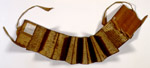

Guru Manaon ni adji m. Marbun, Poda ni tembak. Bataks. Handschrift op boombast, 15 ff., 105 x 98 mm. Dubbelzijdig beschreven. Sumatra, vóór 1850. -- (Or. 3526)
Deze tekst, een Batakse handleiding voor het schieten met een geweer, is geschreven op boombast, dat in harmonicavorm gevouwen is. Het schrijfmateriaal is afkomstig van een op Sumatra inheemse boom (Aquilaria malaccensis) en sterk en duurzaam. Een strook bast, vaak van een aantal meters lang, wordt van de boom afgehaald. Deze wordt bewerkt: glad gemaakt, op gelijke breedte gebracht, gepolijst, gevouwen en blind gelinieerd. Inkten worden eveneens uit lokale ingrediënten vervaardigd. De stijve stekels van de suikerpalm doen dienst als pen. Als bescherming worden meestal houten platten aan de uiteinden van het boek gelijmd, die vaak voorzien zijn van snijwerk.
De Batakse geschreven literatuur omvatte oorspronkelijk voornamelijk drie onderwerpen: magie, divinatie en geneeskunde. De illustraties in Batakse boeken dienen om de eigenaar te beschermen of om zijn vijanden te schaden. Soms dient een tekening ook om een praktijk die in de tekst wordt beschreven te illustreren. De boeken waren een geheugensteun voor leraren en leerlingen. Hun teksten zijn vaak zeer summier, waardoor in de loop der tijd veel van hun inhoud verloren is gegaan. Deze boeken zijn zelden of nooit gedateerd, hoewel ketens van overlevering in de tekst soms wel een relatieve datering mogelijk maken. Alleen als de verwervingsgeschiedenis van het boek bekend is, kan deze een zekere ‘terminus ante quem’ geven. Sinds de tweede helft van de achttiende eeuw zijn grote aantallen Batakse boeken in particuliere en openbare collecties in Europa en Amerika terechtgekomen; het zijn dan ook aantrekkelijke verzamelobjecten. De oudst bekende dateren dus minstens uit die tijd en zijn waarschijnlijk niet zo heel veel ouder. Hoewel de Batakse boombastboeken er vaak erg antiek of archaïsch uitzien, zijn de meeste van de ons bekende niet veel meer dan ruim honderd jaar oud. De klimatologische omstandigheden in Indonesië maken het fysieke, over de generaties heen, overleven van boeken die zijn vervaardigd uit natuurlijke materialen, haast onmogelijk.
Het hier getoonde handschrift is door H.N. van der Tuuk verworven, en misschien zelfs wel voor hem vervaardigd, in zijn Sumatraanse periode. De tekst bevat instructies voor het afschieten van een geweer. De tekst bij de illustratie op pagina 11, die evenwijdig met de vouw is geschreven, luidt: ‘Indien men schiet naar een lager gelegen terrein moet men, als het doel ver is, op het hoofd richten; is het matig ver dan vlak boven de schouder; is het dichtbij dan richte men op de borst; nog dichterbij dan op het onderste deel van de rug.’ De figuur links van de tekst op pagina 11 behoort bij de tekst op de voorgaande bladzijde. Het cirkeltje bij het geweer is de kogel. Op andere illustraties op dezelfde zijde worden gecombineerde kogels, verpakt in papier, getoond, waarschijnlijk een soort hagel. Het afgebeelde geweer is kennelijk een voorlader, met een vuursteenmechanisme. Percussie zou ook kunnen, maar het handschrift is er misschien te vroeg voor. Het afschieten van een geweer kon ook om divinatoire redenen geschieden: de schutter kon dan daaruit een voorspelling doen over de afloop van een ernstige ziekte.
Literatuur
- P. Voorhoeve, The Chester Beatty Library. A catalogue of the Batak manuscripts including two Javanese manuscripts and a Balinese Painting. Dublin 1961.
- P. Voorhoeve, Codices Batacici. Leiden 1977 (= Bibliotheca Universitatis
Leidensis, Codices manuscripti. XIX), p. 73, 507.
| vorige pagina | top pagina |